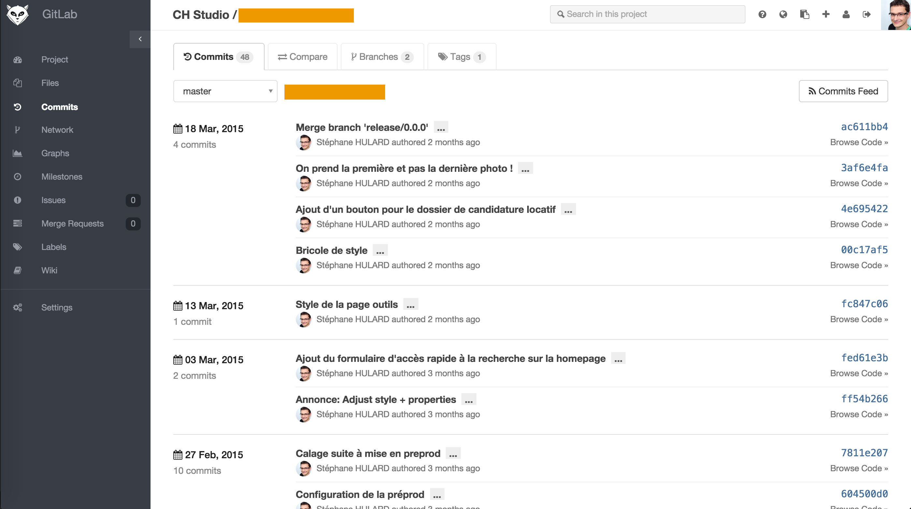

2015 - WordCamp Lyon / WordPress, Git et l'intégration continue
2015 - WordCamp Lyon / WordPress, Git et l'intégration continue
WordPress, Git et l'intégration continue
Retour d'expérience et outils...
WordCamp Lyon / 5 juin 2015
Qui suis-je ?
Consultant technique web
Développements spécifiques, création de site, constitution d'équipes, accompagnement, méthodes agiles...
Mon crédo, si c'est technique et web, ça m'intéresse
Pendant cette session...
- L'intégration continue ?
- Pourquoi avec WordPress ?
- Mes méthodes et outils
L'intégration continue ?
Qu'est-ce que c'est ?
Continuous Integration is a software development practice where members of a team integrate their work frequently, usually each person integrates at least daily - leading to multiple integrations per day. Each integration is verified by an automated build (including test) to detect integration errors as quickly as possible. Many teams find that this approach leads to significantly reduced integration problems and allows a team to develop cohesive software more rapidly.
Martin Flower
À quoi ça sert ?
Donner la possibilité à :
- Une équipe de se rendre compte de ses erreurs automatiquement ;
- À un testeur d'avoir accès aux derniers développements automatiquement ;
- À un chef de projet de suivre l'évolution du travail en cours.
Pour qui ?
- Les équipes de développement qui travaille sur des gros projets et qui utilisent des méthodes agiles
- Pratiques issues du développement logiciel, pas très facile à appliquer sur de l'intégration de sites web
Bénéfices
- Amélioration de la fiabilité des développements
- Automatisation des tâches récurentes, ne pas perdre de temps sur des choses sans valeur ajoutée
Pourquoi avec WordPress ?
En tant qu'indépendant
Je ne veux pas :
- Perdre de temps à me rappeler les règles pour l'installation ;
- Me rappeler des plugins / outils que j'utilise à chaque fois.
Je veux :
- Allez vite à l'essentiel, l'intégration des thèmes/plugins !
Mais... avec WordPress ???
J'entends trop souvent :
- WordPress c'est juste pour faire des blogs !
- WordPress c'est mal codé !
- WordPress c'est pas fait pour les devs !
Alors, pourquoi des sites comme Wired.com l'utilisent ?
Pour moi c'est un outil !
Il faut le comprendre, le connaitre et ne pas chercher à le changer.
S'il n'est pas adapté, il faut en choisir un autre...
Par contre, il doit aussi être adapté à mon workflow de travail quotidien...
Quelles contraintes ?
- Différents environnements avec différentes configurations
- Développement en local, ici tout et possible!
- Production sur serveur client (mutualisé, dédié, ...) on ne maitrise rien ici...
- Un cycle de vie des données (BDD, images) à gérer !
Mes méthodes et outils
Le contrôle de version
Je travaille principalement seul sur les projets d'intégration...
... mais je l'utilise au quotidien pour tout le code que j'écris!
- Git - https://git-scm.com/ (mon préféré)
- Subversion - https://subversion.apache.org/
Un modèle de projet
Je me suis créé un projet type pour l'intégration WordPress :
- Une structure duplicable très rapidement
- Un projet construit selon mes besoins
- Versionné sous Git et dispo sur GitHub
https://github.com/CHStudio/wordpress-project1
L'automatisation
J'utilise des outils pour automatiser les tâches récurentes :
- Initialisation de la configuration
wp-config.php - Initialisation de la base de données
- Sauvegarde / Restauration des contenus (images et BDD)
- Gestion des différents environnements (dev, préprod, prod)
Objectif: Simplifier les tâches critiques et automatiser !
La commande est mon amie
La plupart des outils s'utilisent en ligne de commande.
Il faut apprendre à dompter le terminal, Bash, SSH pour qu'ils deviennent des alliés.
Des besoins compliqués ...
- Versionning, tag, branches
- Imports SQL en ligne de commande
- RSync: Synchronisation de fichiers vers un serveur distant par SSH
- Validation du code (PHPLint, Behat/Mink, PHPUnit...)
Connaitre le fonctionnement de chacun de ces outils est un cauchemar...
... mais des solutions existent
Beaucoup de monde s'est déjà posé la question, il faut se servir de leur expérience!
Il faut trouver les outils adaptés et capables de manipuler :
- Un environnement PHP
- Git / SVN
- MySQL
- Configuration du serveur web
Phing et WP-CLI à la rescousse
Phing et WP-CLI à la rescousse
WP-CLI est une série de commandes pour gérer les installations WordPress :
- Ajout d'utilisateurs, gestion des droits
- Gestion de termes, des posts, des thèmes, des sidebars...
- Tout ça en ligne de commande
$ bin/wp export
$ bin/wp is-installed
$ bin/wp install --url="http://monsite.com" --title="un super site !"
$ bin/wp post create
$ bin/wp rewrite list
Phing et WP-CLI à la rescousse
Ces tâches sont agrégées pour simplifier
$ phing env:init -> Générer la configuration
$ phing env:install -> Initialser configuration et BDD
$ phing db:backup -> Créer un dump de la BDD au format SQL
$ phing wp:uploads:restore -> Restaurer une archive des images
$ phing sync:execute -> Synchroniser un environnement distant
Dépendances avec Composer
Quels outils, dans quelles versions, sont utiles au projet ?
{
"name": "chstudio/wordpress-project",
"description": "A sample initialization project for WordPress website",
"license": "Apache-2.0",
"authors": [
{ "name": "Stephane HULARD", "email": "s.hulard@chstudio.fr" }
],
"config": {
"bin-dir": "bin"
},
"require": {},
"require-dev": {
"phing/phing": "2.*",
"wp-cli/wp-cli": "0.*"
}
}
Installation avec Composer
Une commande pour les trouver !
Une commande pour les amener tous !
Et dans un projet les lier...
# En local
$ composer install
# En production
$ composer install --no-dev --optimize-autoloader --prefer-dist --no-interaction
Le fichier composer.lock doit être versionné!
Git branching model
Structurer et normaliser le flux de développement avec git: Git Flow
- Développement
- Releases
- Production
- Maintenance

Et HOP dans le Cloud !
J'utilise GitLab pour gérer mes dépôts clients, gratuit et avec la possibilité de créer des dépôts privés !
GitLab
- Des dépôts centralisés et accessibles en HTTP / SSH
- Installation simplifiée et accès sécurisé par clé SSH
- Gestion des tickets
- Sauvegarde du code source des projets
Récupérer les sources et installer le projet :
$ git clone
$ composer install --no-dev --optimize-autoloader --prefer-dist --no-interaction
$ bin/phing env:install --Dbuild.env=PROD
$ bin/phing db:restore --Dbuild.env=PROD
$ bin/phing wp:uploads:restore --Dbuild.env=PROD
$ bin/phing wp:migrate --Ddomain.previous=http://monsite.dev --Ddomain.previous=http://monsite.com
GitLab CI
- Plateforme d'intégration continue gratuite dans GitLab
- Un
buildest généré pour chaque commit sur le projet
GitLab CI: Un build ?
Un build est une série d'étapes totalement automatisées, qui seront exécutées sur chaque commit.
Il permet de faire tout ce qui est nécessaire :
- Tests unitaires et fonctionnels
- Validation du code (
PHP CodeSnifferpar exemple) - Déploiement automatique en cas de succès
Le projet devient autonome...
GitLab CI: Liste des builds
- Visualisation de l'état de chaque commit
- Accès au statistiques sur le projet
GitLab CI: Log d'un build
- Visualisation du retour d'exécution des commandes
- Utile pour savoir d'ou vient le soucis
Un couple efficace
- L'intégration native entre les deux plateformes simplifie fortement l'installation...
- Les builds peuvent être exécutés n'importe où :
- Pas nécessaire d'avoir un serveur
- Lancement en local très simple
D'autres solutions existes
- Jenkins: http://jenkins-ci.org/
- PHPCI: https://www.phptesting.org/
- Travis CI: https://travis-ci.org/
- ...
De nouvelles contraintes et possibilités, il faut les étudier !